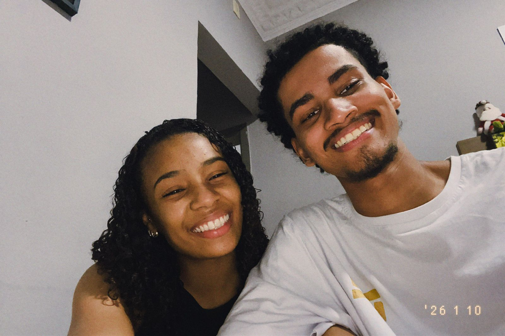
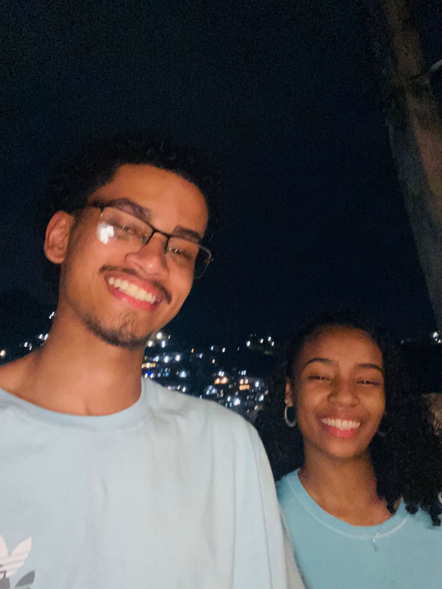
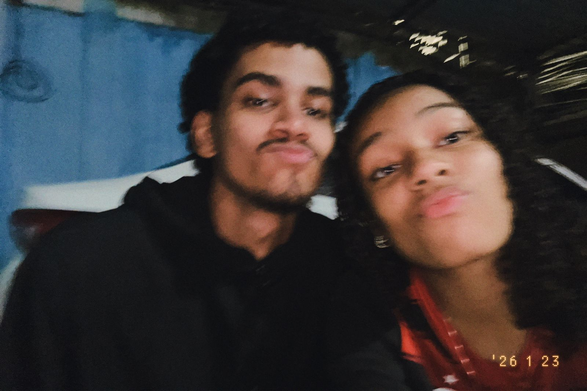
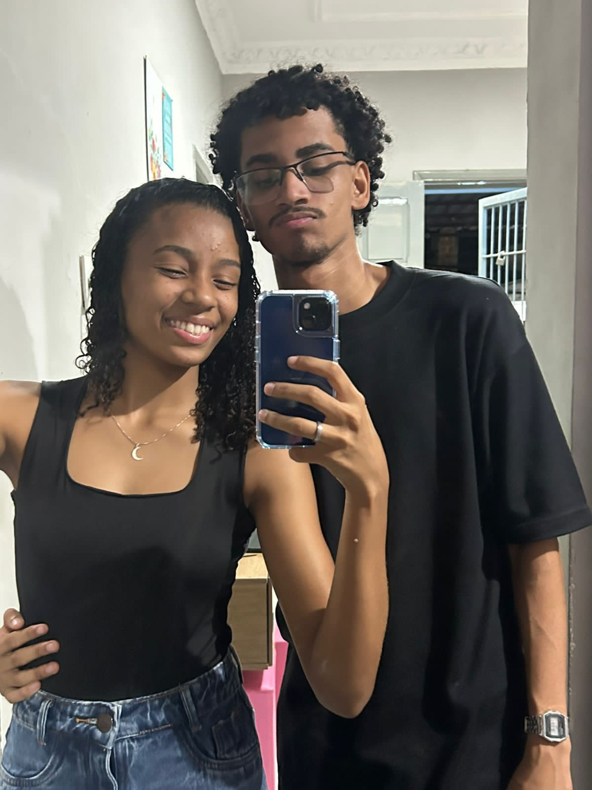
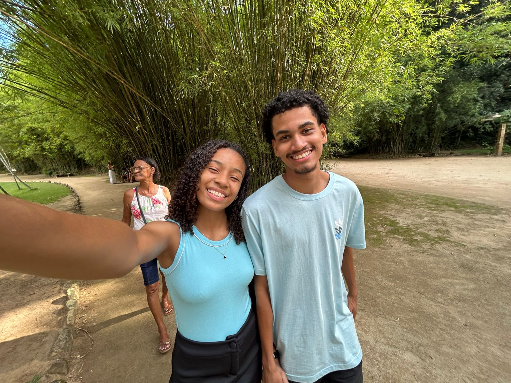
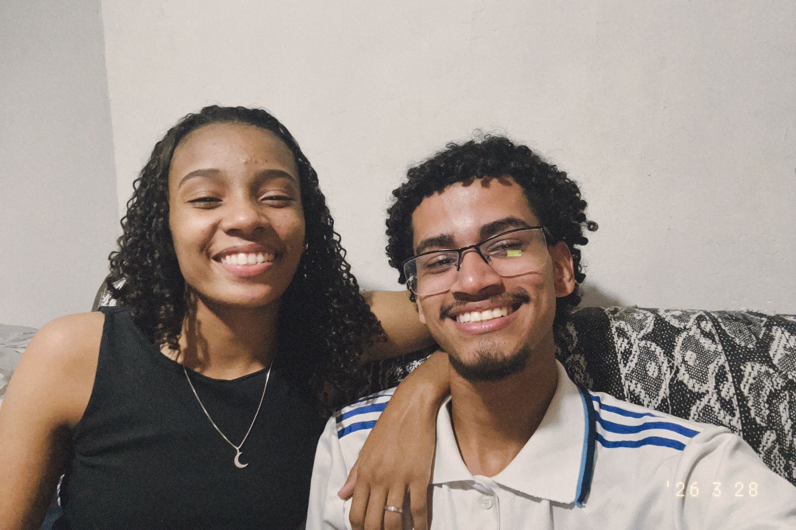
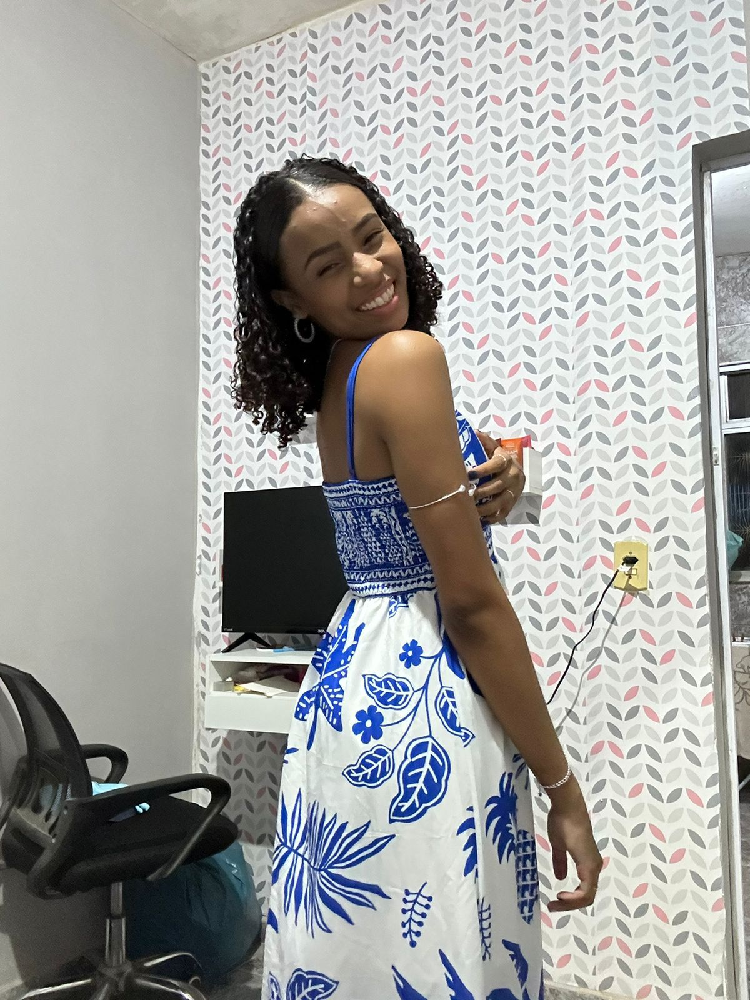

Dias
Horas
Minutos
Segundos
Cazuza
Cada momento com você tem um valor que não dá pra medir.
Não é só sobre estar junto, é sobre como tudo fica mais leve, mais bonito e mais verdadeiro quando você está perto. Até os dias comuns se tornam especiais, só porque eu tô vivendo eles ao seu lado.
O seu sorriso muda meu dia, seu jeito me acalma, e cada conversa nossa fica guardada como algo precioso dentro de mim. São os pequenos detalhes, os olhares, as risadas... Tudo faz com que eu tenha ainda mais certeza de que ter você é um dos maiores presentes da minha vida.






Ainda me lembro exatamente de como eu estava… nervoso, cheio de pensamentos, inseguro. Mas, ao mesmo tempo, havia dentro de mim uma certeza silenciosa de que aquilo era o certo a se fazer. Foi o dia em que eu gravei e regravei aquele áudio várias vezes, tentando colocar em palavras tudo o que eu sentia. E foi ali, naquele momento simples, mas tão verdadeiro… que demos início ao nosso propósito.
Confesso que o nervosismo estava ali, batendo forte no meu coração… mas não foi capaz de me parar. Eu poderia ter recuado, deixado o medo falar mais alto, mas algo dentro de mim era maior que tudo aquilo. Era como se Deus estivesse me dando coragem, me guiando naquele momento. E foi essa certeza, essa paz que vinha d’Ele, que me fez ir até ele e falar. Porque, no fundo, eu sabia… não era só o que eu queria fazer, era o que Deus queria que eu fizesse.
Foi um dia totalmente aleatório… aniversário do Bessa, eu todo preocupado porque ainda estava cheirando a ovo podre kkkkk, com uma roupa nada a ver. Mesmo assim, do nada, decidi passar na sua casa. A gente ficou ali, passou um tempo juntos… simples, mas especial. E então, na despedida, quando eu menos esperava… você foi lá e me beijou. Voltei pra casa diferente naquele dia… com um sorriso que eu não conseguia explicar e com a certeza de que algo novo tinha começado.
Cara… aqui foi diferente. Meu Deus, eu estava muito nervoso mesmo… cheguei a tremer. A mente não parava: “e se ela disser não?”, “e se ela não gostar da surpresa?”. Tudo parecia contribuir, até o tempo chuvoso daquele dia deixava tudo mais intenso. Mas, no meio de tudo isso, eu senti Deus ali comigo, acalmando meu coração e me dando coragem pra continuar. E, no final… deu tudo certo. Porque quando a gente coloca nas mãos de Deus, até o que parece incerto se transforma em algo perfeito.
Estou ansioso para viver o momento em que nossa história será completa de verdade… para te ter ao meu lado não só em palavras, mas em aliança, em propósito, diante de Deus. O dia em que você será, de forma plena, a minha “Sra. Motta”… o nosso casamento e nossa familia..

Gabriella Alamino Gonçalves do Nascimento
Sempre no meu coração ❤️
Meu amor, quero aproveitar esse espaço para te dizer algo que carrego com muito carinho no coração… eu tenho um orgulho imenso da mulher que você é. Da sua força, da sua fé, do seu jeito único de cuidar, de amar e de permanecer firme mesmo nos dias difíceis. Você é uma inspiração pra mim, e sou grato a Deus todos os dias por ter você ao meu lado.
Claramente só pelo mulher que você é, tenho certeza da esposa, mãe e companheira que você vai ser. Eu te amo minha preta
Enfim...Obrigado por ser quem você é, e espero que goste do que fiz, com amor Seu Preto.